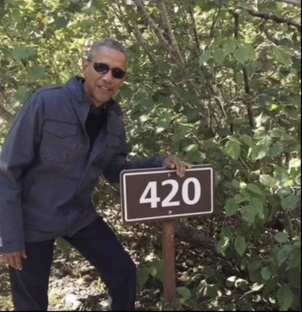
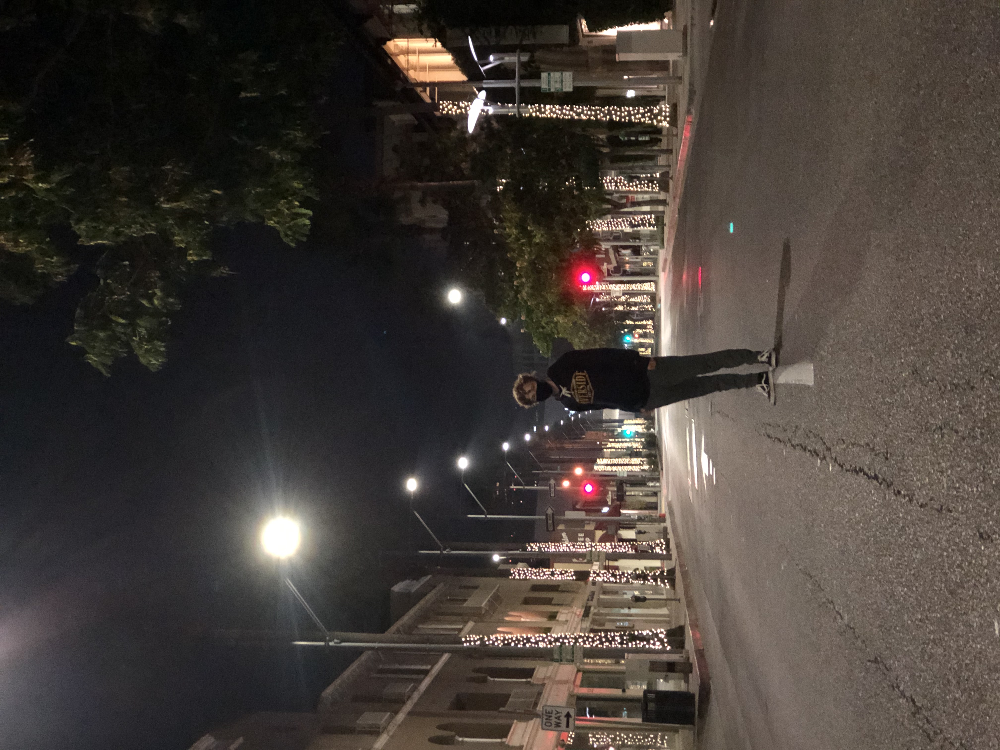
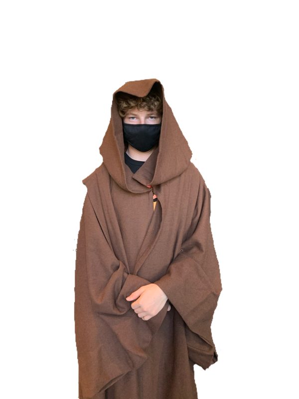
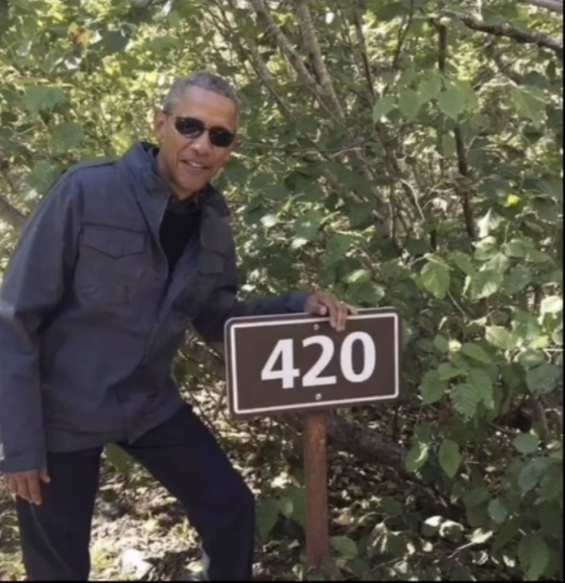
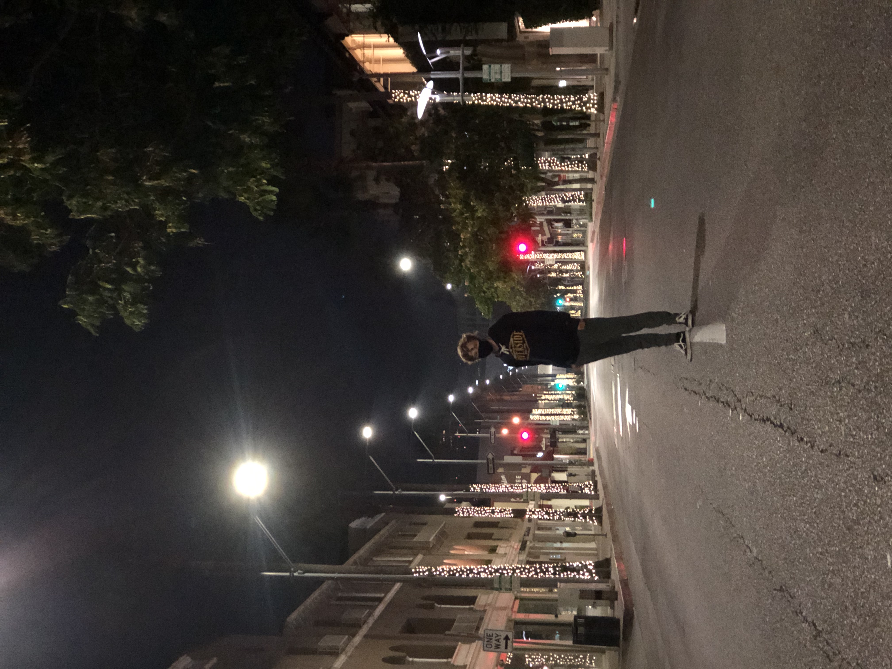
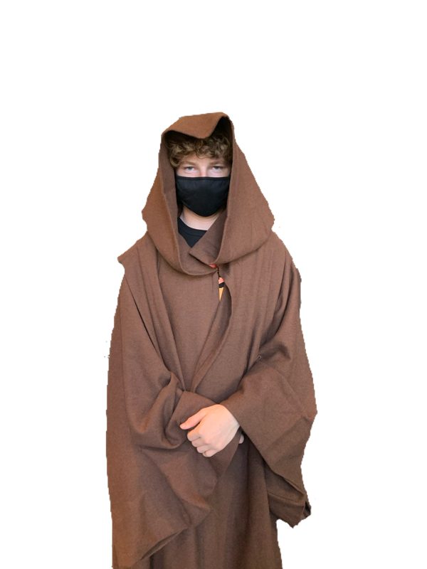
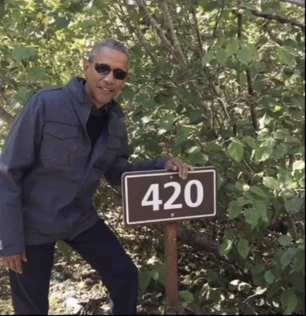
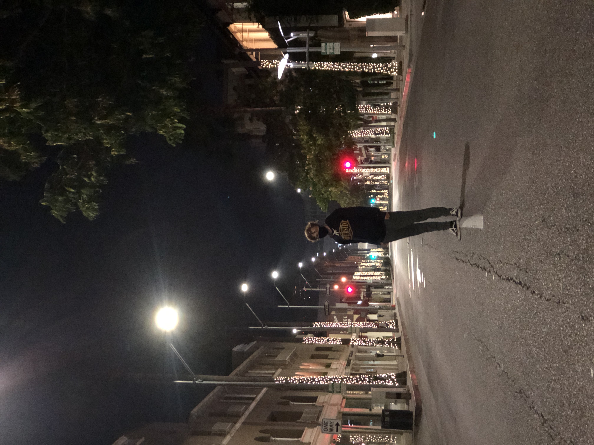
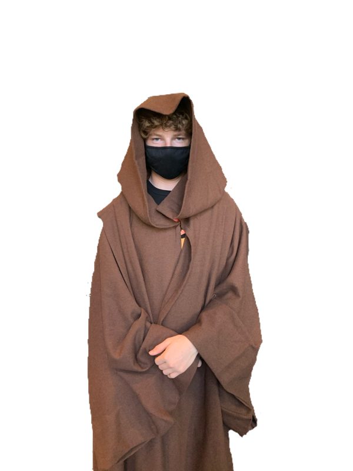

Brendon Smith
I graduated from Quartz Hill High School in June of 2020 with above a 4.0 GPA(Grade Point Average). I applied to several colleges and univsrsities to which I got no rejections. However, I chose to attend the University of California Riverside due to their exceptional accademic programs and cultural inclusiveness.
While attending the University of California Riverside I have been able to learn many things and expand my knowledge past the basics we were taught in High School. UCR has not only taught me textbook knowledge, but it has also expanded my communication skills. Through my two years there I've been able to interact with people off all different backgrounds in a healthy and progressive way. This interaction is key to my social skills and has helped me grow into a more sociable person.
Outside of school I have done many different activities. Some of these include athletics such as soccer, baseball, cross country, and track. I've excelled in all these sports and put in 100% effort. Like everything I do, I like to put in my all to ensure not only myself, but the others working with me do good at what we are doing. I've worked at an Six Flags Magic Mountain over the summer and have learned more about responsibility and accountability than I had before. Having this first job has really expanded my respect for workers and how tough it is to make a living off of something like that.Outside of school I have done many different activities. Some of these include athletics such as soccer, baseball, cross country, and track. I've excelled in all these sports and put in 100% effort. Like everything I do, I like to put in my all to ensure not only myself, but the others working with me do good at what we are doing. I've worked at an Six Flags Magic Mountain over the summer and have learned more about responsibility and accountability than I had before. Having this first job has really expanded my respect for workers and how tough it is to make a living off of something like that. Outside of school I have done many different activities. Some of these include athletics such as soccer, baseball, cross country, and track. I've excelled in all these sports and put in 100% effort. Like everything I do, I like to put in my all to ensure not only myself, but the others working with me do good at what we are doing. I've worked at an Six Flags Magic Mountain over the summer and have learned more about responsibility and accountability than I had before. Having this first job has really expanded my respect for workers and how tough it is to make a living off of something like that. Outside of school I have done many different activities. Some of these include athletics such as soccer, baseball, cross country, and track. I've excelled in all these sports and put in 100% effort. Like everything I do, I like to put in my all to ensure not only myself, but the others working with me do good at what we are doing. I've worked at an Six Flags Magic Mountain over the summer and have learned more about responsibility and accountability than I had before. Having this first job has really expanded my respect for workers and how tough it is to make a living off of something like that. Outside of school I have done many different activities. Some of these include athletics such as soccer, baseball, cross country, and track. I've excelled in all these sports and put in 100% effort. Like everything I do, I like to put in my all to ensure not only myself, but the others working with me do good at what we are doing. I've worked at an Six Flags Magic Mountain over the summer and have learned more about responsibility and accountability than I had before. Having this first job has really expanded my respect for workers and how tough it is to make a living off of something like that. Outside of school I have done many different activities. Some of these include athletics such as soccer, baseball, cross country, and track. I've excelled in all these sports and put in 100% effort. Like everything I do, I like to put in my all to ensure not only myself, but the others working with me do good at what we are doing. I've worked at an Six Flags Magic Mountain over the summer and have learned more about responsibility and accountability than I had before. Having this first job has really expanded my respect for workers and how tough it is to make a living off of something like that. Outside of school I have done many different activities. Some of these include athletics such as soccer, baseball, cross country, and track. I've excelled in all these sports and put in 100% effort. Like everything I do, I like to put in my all to ensure not only myself, but the others working with me do good at what we are doing. I've worked at an Six Flags Magic Mountain over the summer and have learned more about responsibility and accountability than I had before. Having this first job has really expanded my respect for workers and how tough it is to make a living off of something like that. Outside of school I have done many different activities. Some of these include athletics such as soccer, baseball, cross country, and track. I've excelled in all these sports and put in 100% effort. Like everything I do, I like to put in my all to ensure not only myself, but the others working with me do good at what we are doing. I've worked at an Six Flags Magic Mountain over the summer and have learned more about responsibility and accountability than I had before. Having this first job has really expanded my respect for workers and how tough it is to make a living off of something like that. Outside of school I have done many different activities. Some of these include athletics such as soccer, baseball, cross country, and track. I've excelled in all these sports and put in 100% effort. Like everything I do, I like to put in my all to ensure not only myself, but the others working with me do good at what we are doing. I've worked at an Six Flags Magic Mountain over the summer and have learned more about responsibility and accountability than I had before. Having this first job has really expanded my respect for workers and how tough it is to make a living off of something like that. Outside of school I have done many different activities. Some of these include athletics such as soccer, baseball, cross country, and track. I've excelled in all these sports and put in 100% effort. Like everything I do, I like to put in my all to ensure not only myself, but the others working with me do good at what we are doing. I've worked at an Six Flags Magic Mountain over the summer and have learned more about responsibility and accountability than I had before. Having this first job has really expanded my respect for workers and how tough it is to make a living off of something like that. Outside of school I have done many different activities. Some of these include athletics such as soccer, baseball, cross country, and track. I've excelled in all these sports and put in 100% effort. Like everything I do, I like to put in my all to ensure not only myself, but the others working with me do good at what we are doing. I've worked at an Six Flags Magic Mountain over the summer and have learned more about responsibility and accountability than I had before. Having this first job has really expanded my respect for workers and how tough it is to make a living off of something like that. Outside of school I have done many different activities. Some of these include athletics such as soccer, baseball, cross country, and track. I've excelled in all these sports and put in 100% effort. Like everything I do, I like to put in my all to ensure not only myself, but the others working with me do good at what we are doing. I've worked at an Six Flags Magic Mountain over the summer and have learned more about responsibility and accountability than I had before. Having this first job has really expanded my respect for workers and how tough it is to make a living off of something like that. Outside of school I have done many different activities. Some of these include athletics such as soccer, baseball, cross country, and track. I've excelled in all these sports and put in 100% effort. I achieved great success in everything that I did and do.
Experience
Ride Operator
• Worked on the rollercoaster X-2
• Secured restraints and supervised safety of guests
• Dealt with guest relations and maintained a safe and fast work environment
College Athlete
• Ran cross country and track for the university
• Practiced every day with a group of profesional athletes making sure I improved along with them
Landscaper
• Worked on cutting and edging lawns
• Remodled yards
• Moved grass, rocks, bricks, etc.
• Summer Job
Education
UC Riverside
Portfolio
 







